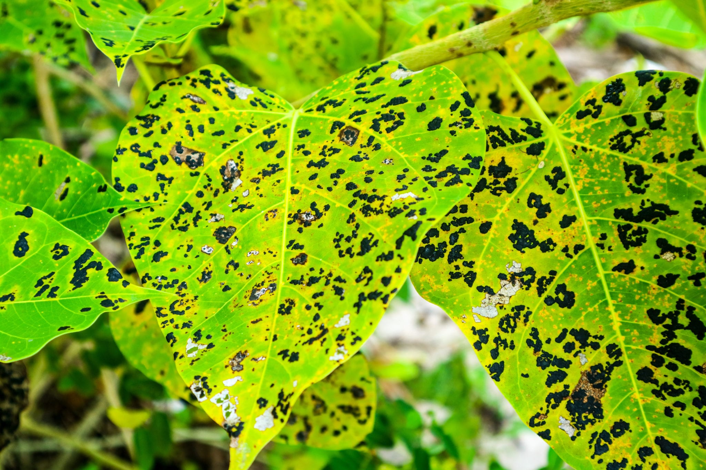

Leaf Blight
Leaf Blight
🔍 Disease Symptoms
- Dark or yellow spots on leaves.
- Leaf death and defoliation over time.
- Rapid spread of the disease under favorable conditions.
🛠️ Treatment and Control
- Remove infected leaves and dispose of them properly.
- Apply organic fungicides to control the disease.
- Ensure proper watering practices to avoid waterlogging.
🛡️ Prevention Measures
- Provide adequate spacing between plants to ensure good air circulation.
- Choose disease-resistant varieties for planting.
Powdery Mildew
Powdery Mildew
🔍 Disease Symptoms
- Dark or yellow spots on leaves.
- Leaf death and defoliation over time.
- Rapid spread of the disease under favorable conditions.
🛠️ Treatment and Control
- Apply neem oil spray to the plants.
- Move plants to a location with adequate sunlight.
- Remove infected parts of the plant.
🛡️ Prevention Measures
- Avoid over-fertilizing with nitrogen.
- Ensure proper spacing between plants for good air circulation.